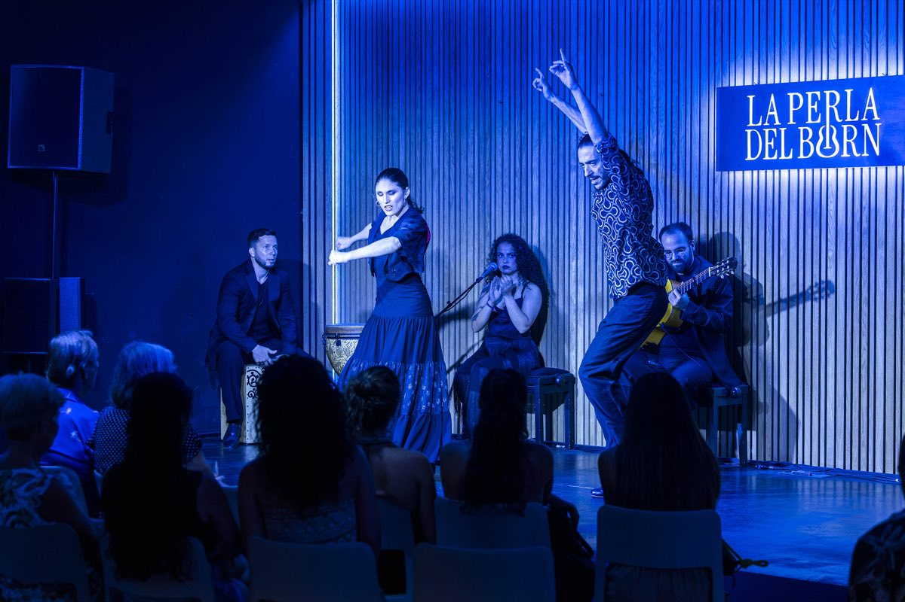
De miércoles a domingo
Conciertos en el nuevo espacio de referencia en el corazón del Born, Barcelona
Los espectáculos
Dos shows, una misma emoción
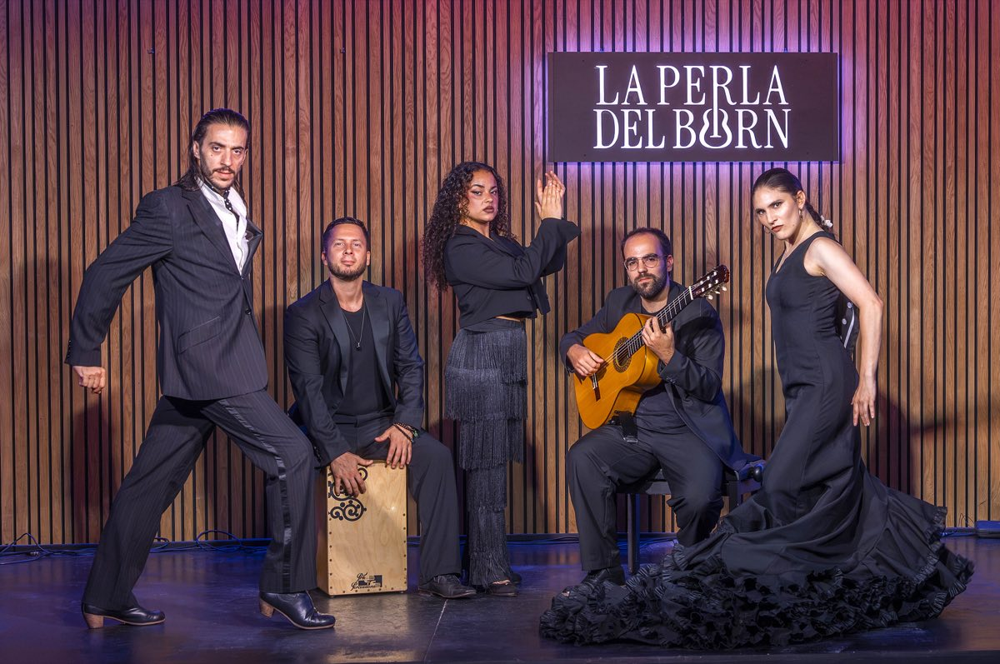
Espectáculo dirigido por José Manuel Álvarez. Flamenco puro e íntimo. Guitarra, piano, baile y cante en un formato cercano y directo que conecta con el alma del flamenco más auténtico.
Homenaje a Paco de Lucía. Un recorrido por la obra del maestro con virtuosismo técnico y una presencia escénica que deja sin palabras.
El espacio
Un rincón con alma en El Born
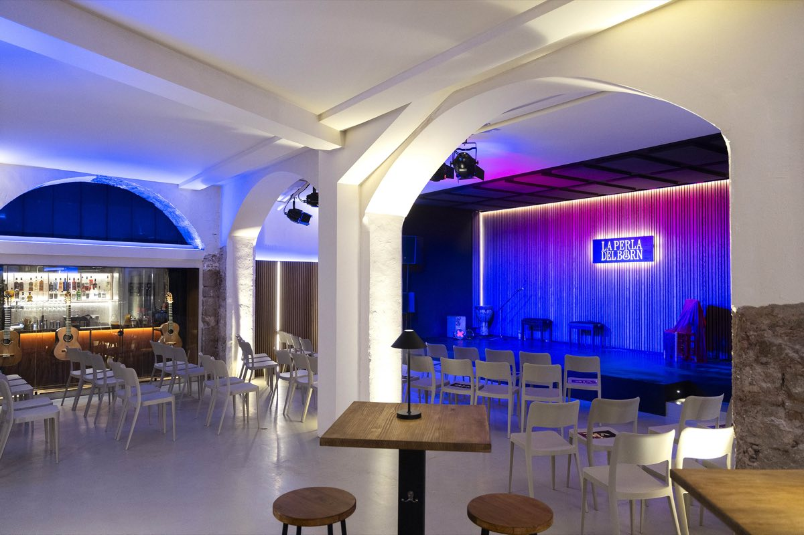
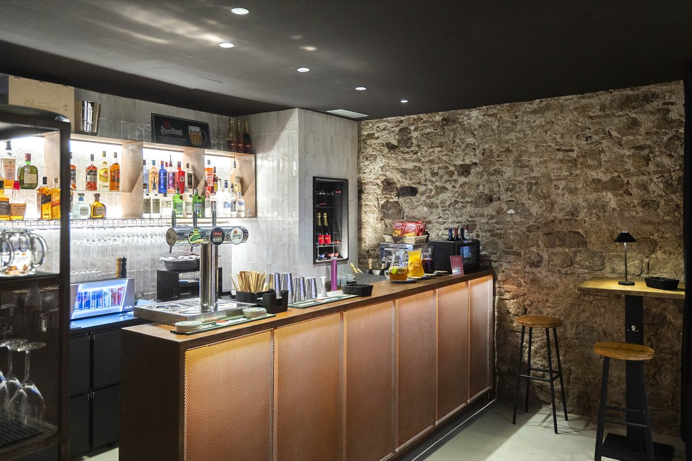
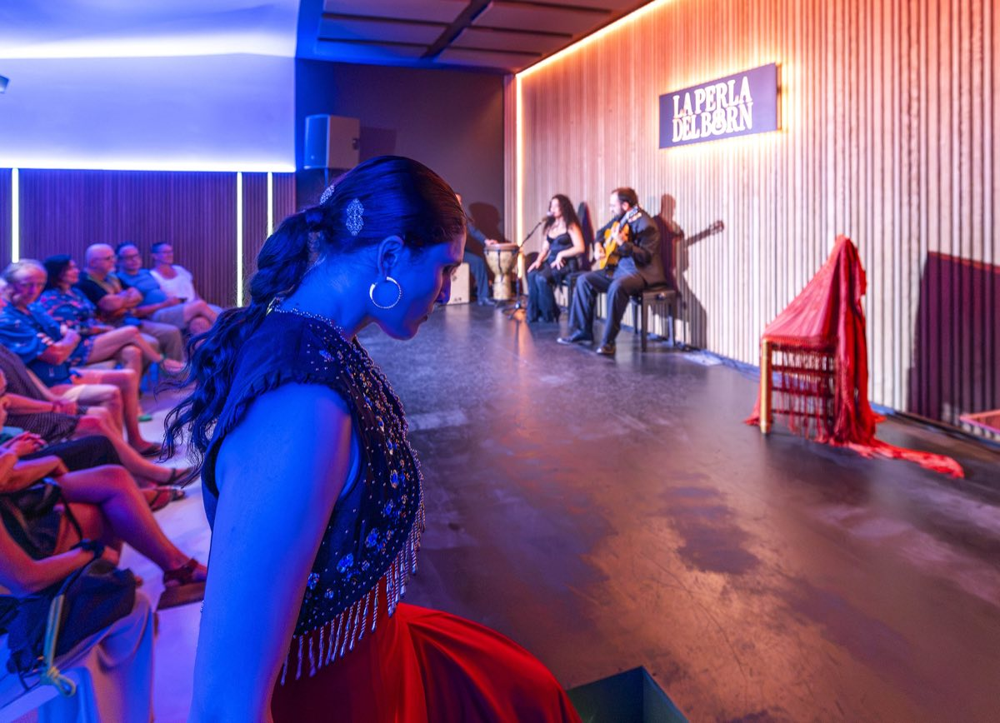
Sala íntima con capacidad para hasta 100 personas, escenario propio, barra con cócteles artesanales y una atmósfera que envuelve desde el primer momento. En pleno barrio del Born, a pasos del Museo Picasso y Santa María del Mar.
La Perla del BornEl ambiente
Bar, cócteles y más
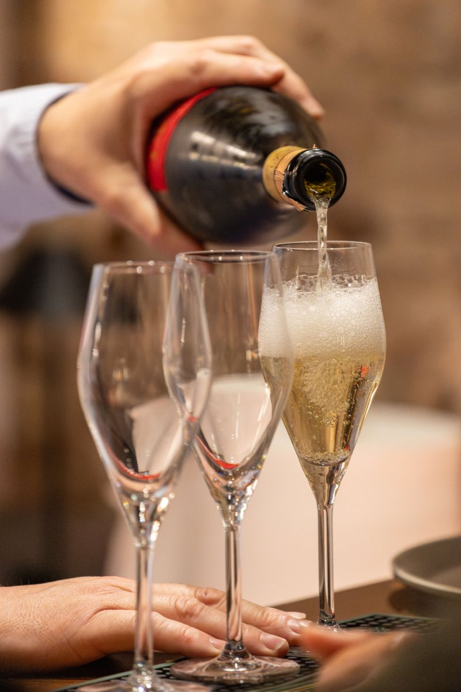
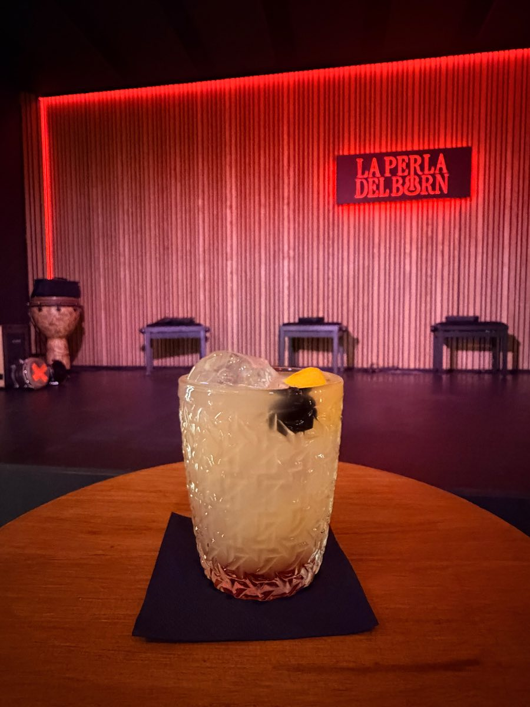
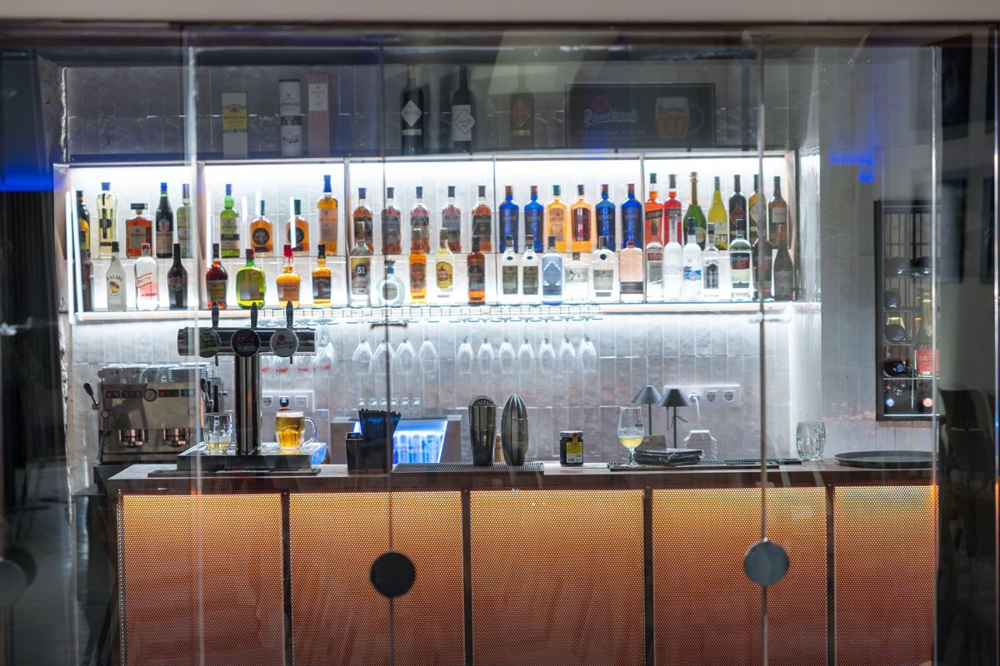
Cócteles artesanales, vinos y cava para disfrutar antes y después del espectáculo, a tu ritmo. Un espacio con personalidad propia, decoración cuidada y un ambiente que envuelve.
La Perla del BornLa experiencia
Por qué La Perla del Born
Junto al Museo Picasso, Santa María del Mar y el Paseo del Born. Fácil acceso a pie desde cualquier punto de la ciudad.
Artistas profesionales, producción cuidada y un formato cercano que emociona a cualquier público.
Compra tus entradas online o reserva por teléfono y email. Para grupos, condiciones especiales.
Cócteles artesanales, vinos y cava antes y después del show.
Valoraciones de 5 sobre 5 desde el primer día. El público destaca la calidad artística y la atmósfera.
Decoración cuidada y un ambiente que envuelve. Lejos de los circuitos turísticos masificados.
Opiniones
Lo que dicen de nosotros
⭐⭐⭐⭐⭐
"Experiencia inolvidable en La Perla del Born... El homenaje a Paco de Lucía fue sencillamente emocionante."
— Vanesa Sánchez
"Experiencia transformadora, realmente emotiva y conmovedora. Una presencia escénica con una potencia que nos llegó al alma."
— Lucia Daicz
"Local precioso, con mucho encanto y acogedor, trato exquisito y amable de su personal y muy buen espectáculo."
— Mónica L.
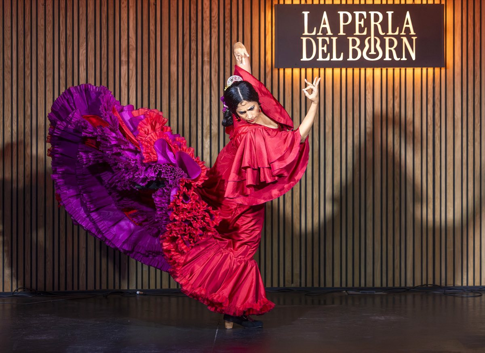
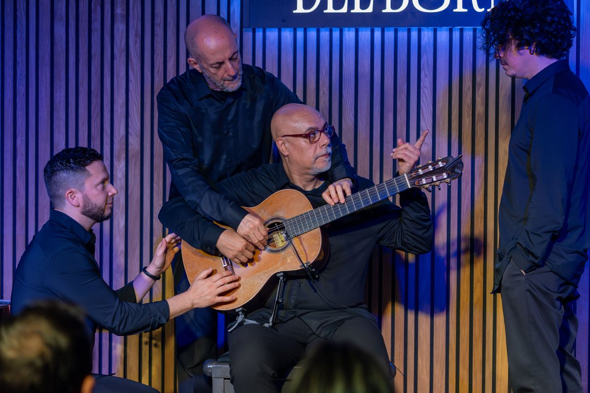
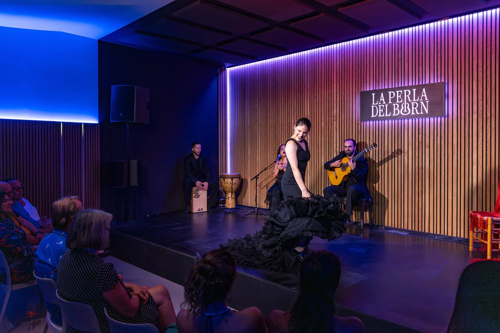
Cómo funciona
Reservar es muy sencillo
Consulta el calendario y elige la fecha que más te convenga.
Online, por teléfono o por email. Para grupos, escríbenos directamente.
Llega, pide un cóctel en la barra y déjate llevar por la música.
Contacto
¿Quieres venir?
Escríbenos para reservar tus entradas o para cualquier consulta.
Tour operadores, agencias y guías: trabajamos con condiciones y comisiones a medida. Contáctanos para diseñar la mejor propuesta para tu grupo.
carol@poemasl.com
+34 677 321 358
Carrer dels Flassaders, 42 · Ciutat Vella · 08003 Barcelona
eventos.laperladelborn.com/conciertos
La Perla del Born · © 2026